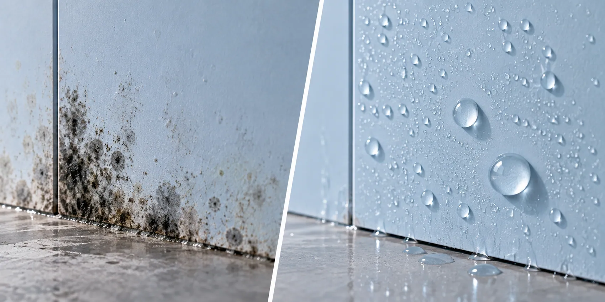
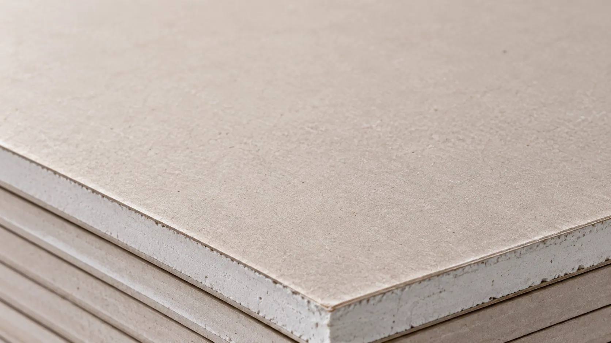
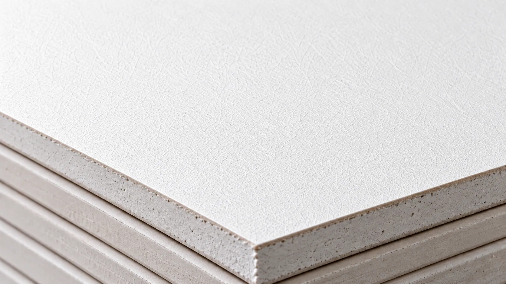
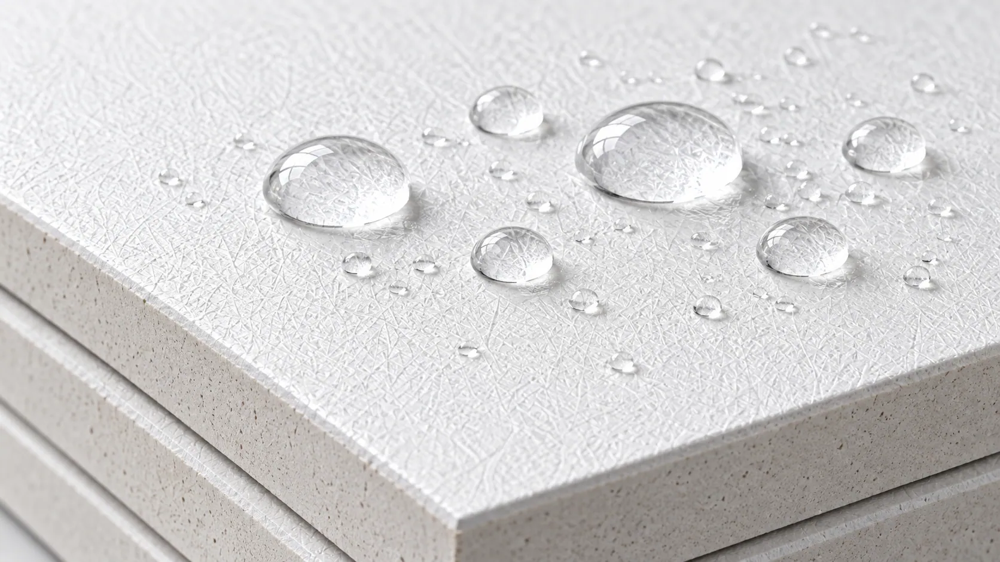
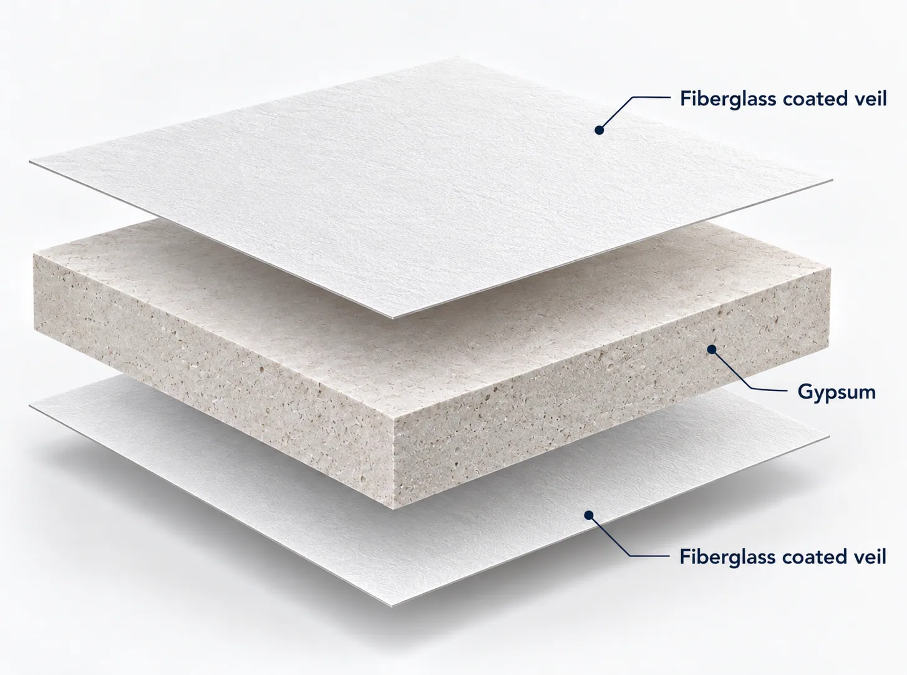
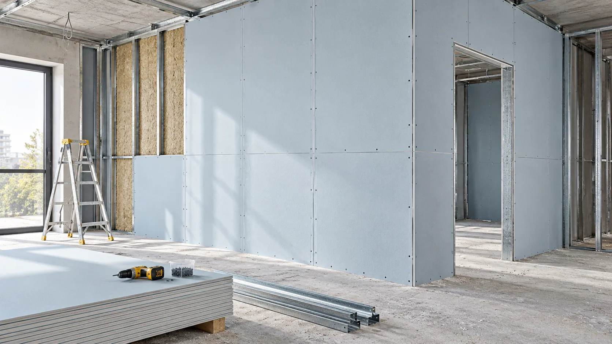
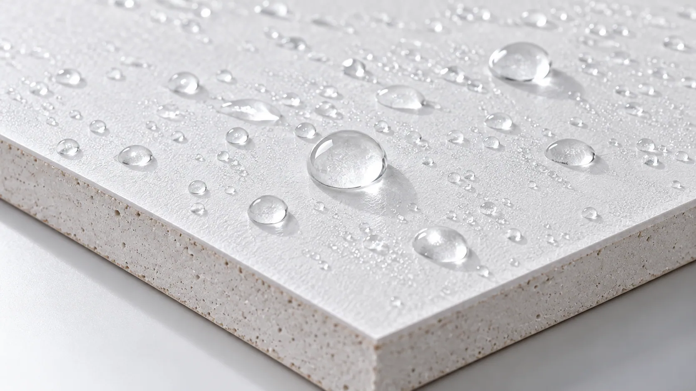
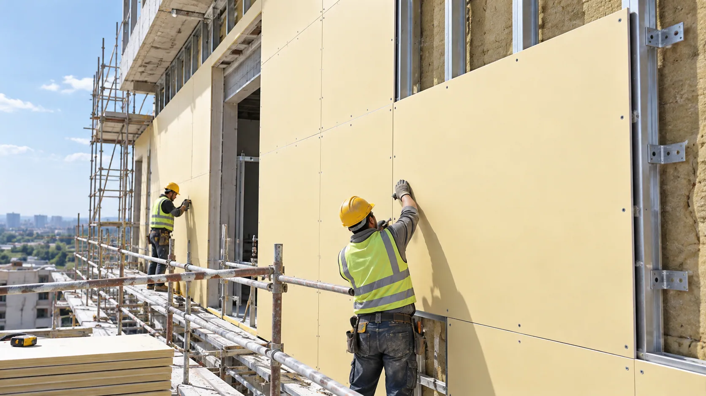
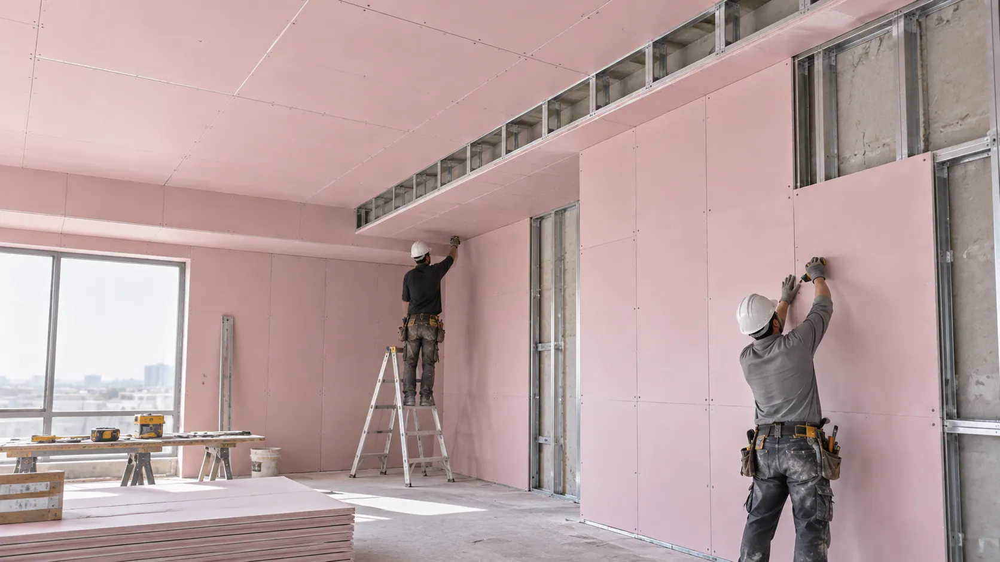

Slurry penetration
Insufficient interaction with the facing can weaken interfacial bonding and increase separation risk.
FIBERGLASS FACING SOLUTIONS FOR GYPSUM BOARD
Better Bonding. Stable Processing. Durable Surfaces.
A coated fiberglass facing for gypsum board manufacturing. Select coating and permeability for your slurry, production line and board application, then validate core bonding, surface quality and complete-board performance.

PERFORMANCE STARTS AT THE SURFACE
Evaluate fiberglass-faced gypsum board for slurry interaction, bonding and stability during forming and subsequent processing.
Insufficient interaction with the facing can weaken interfacial bonding and increase separation risk.
Incompatible facing and core characteristics may cause peeling during processing or handling.
Facing deformation or uneven tension can lead to wrinkles, distortion and board-dimension difficulties.
Unsuitable facing materials can deteriorate under moisture exposure and affect the finished system.

ENGINEERED FOR GYPSUM BOARD PRODUCTION
Select fiberglass structure, coating and permeability for slurry bonding, surface integrity and stable unwinding, forming and cutting.
Evaluate the coated structure with the gypsum core rather than treating the facing as a standalone performance claim.
Check material tension, slurry application and subsequent processing for the selected facing grade.
SEE THE DIFFERENCE
Select by core compatibility, moisture exposure and production conditions; validate the chosen facing with your board formulation.

A conventional option for many interior walls and ceilings. Prolonged moisture exposure or demanding environments may limit its suitability.

A stable substrate and controlled coating provide a non-paper facing solution for gypsum board designs.

Coating, structure and permeability can be selected for particular bonding needs and application conditions.
HOW IT WORKS
The facing provides the coated fiberglass surface. The gypsum core supplies the primary body, thickness and structural form of the finished board.

A lightweight, dimensionally stable veil with controlled coating is selected for slurry interaction and surface requirements.
Confirm bonding strength, dimensional stability and application-specific performance in the complete board system.
FIND YOUR FACING SOLUTION
The gypsum formulation, manufacturing conditions and intended application determine the facing grade to evaluate.
For interior fiberglass-faced boards requiring suitable core bonding, stable processing and consistent surfaces.
Evaluate moisture-resistant coating grades for bathrooms, substrate boards and other humidity-sensitive applications.
Engineered options may be evaluated for environmental exposure, subject to complete board-system testing.
TECHNICAL INFORMATION
Confirm the facing specification against your core formulation, line conditions and finished-board requirements.
| Parameter | Specification |
|---|---|
| Product | Fiberglass Coated Veil for Gypsum Board |
| Base Material | Fiberglass Veil |
| Surface Treatment | Engineered Coating |
| Color | Customizable |
| Surface Finish | Fine, Uniform Texture |
| Weight | Grade-Dependent / Customizable |
| Roll Width | Customizable |
| Air Permeability | Grade-Dependent |
| Gypsum Slurry Compatibility | Requires Production Validation |
| Surface Coverage | Customizable by Grade |
| Moisture Resistance | Available by Coating Grade |
| Supply Form | Rolls |
| Customization | Width, Weight, Coating, Permeability & Surface Properties |
Technical specifications, tolerances, bonding performance, and environmental resistance vary by product grade and gypsum board construction. Contact GRECHO for detailed technical information and available test documentation.
APPLICATIONS
Match the facing and core together; moisture-resistant or exterior use requires the relevant grade and finished-board evidence.

A fiberglass facing alternative for interior gypsum systems, with surface and manufacturing compatibility assessed together.

Evaluate facing and core jointly for bathrooms, kitchens and other humidity-sensitive environments.

Assess specialized coating and surface properties against the intended construction and service exposure.

Select facing characteristics for prefabricated, commercial and specialized systems using the actual manufacturing process and panel targets.
The complete board system must be tested for relevant weather exposure, water resistance, and applicable building requirements.
FROM SAMPLE TO PRODUCTION
Use your slurry formulation, line speed, drying conditions and finishing process in the evaluation.
Share application, core formulation, dimensions, manufacturing conditions and performance targets.
Compare facing structure, coating, permeability and dimensional stability.
Test slurry bonding, forming, drying and manufacturing equipment compatibility.
Agree facing grade, roll dimensions, coating and technical requirements.
FAQ
It can be evaluated as an alternative in appropriately designed boards. Formulation and production adjustments may be needed for bonding and finished-board performance.
Fiberglass structure, coating and permeability affect slurry interaction. Establish the appropriate combination through production testing.
Moisture-resistant grades can be evaluated, but final performance depends on the facing, core formulation and complete board construction.
Width, basis weight, coating, permeability and surface properties may be available, depending on grade and manufacturing feasibility.
LET'S FIND YOUR SOLUTION
Discuss grades and sample testing for your board structure, gypsum slurry and production requirements.